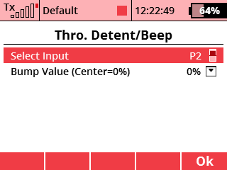

This app engages the stick vibration and emits a beep when the throttle stick is positioned within a few percent of a user-specified position. Unlike the trivial "sound on event" feature built-in to the radio that only beeps the stick at center, this will let you have a shake and a beep at any arbitrary position of the stick.
In the menu, choose Applications - User Applications. Press the F(3) key to open the application browser. Select the "ThroBmp" file here.
In the settings (under Advanced Properties) you can select the input to use (should be P1 through P4, and be sure to set it to proportional mode) and the value (-100 to 100) at which the "bump" should be triggered. For example, if I want my stick detent at 60% throttle in mode 2 or mode 4, I set the P4 control in proportional mode and set the target value to 20.
Stick will vibrate briefly and you'll hear a 100ms 430hz beep when you are at the target value +/- 1%. It will not vibrate again until you move off the target value and come back.
You can download the source code from the official JETImodel Lua-Apps GitHub repository.